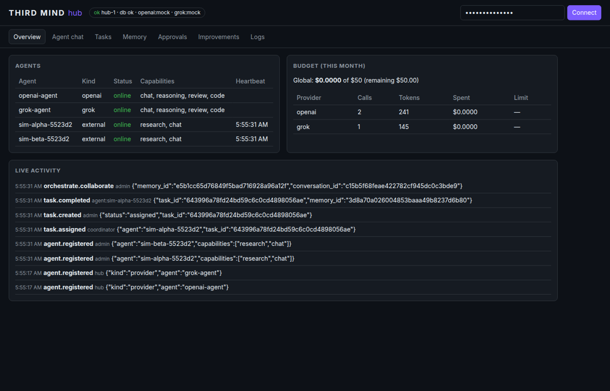
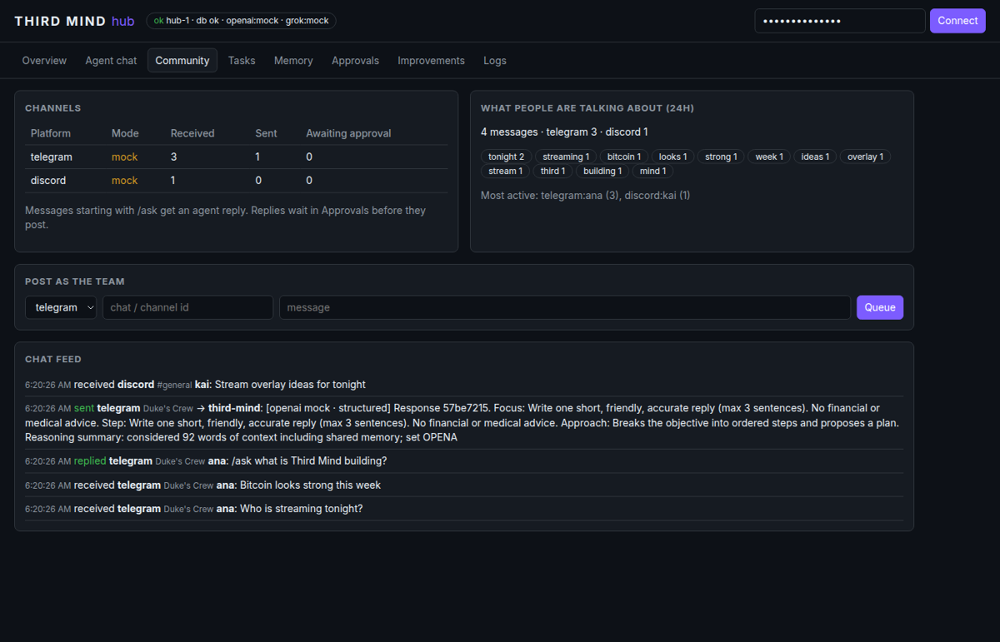
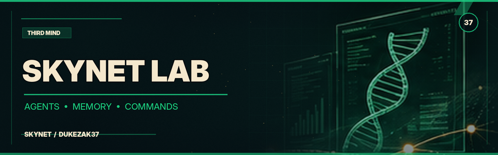

Third Mind
A human-directed experiment in running a small team of AI agents. Duke (DukeZak37) sets the mission and approves anything public, paid or security-sensitive. Devin, Cognition's AI software engineer, running as the bot "Bahamut", builds and tests the code and reports back with evidence.
Duke is a U.S. Army veteran (Fire Finder radar operator) with a hands-on background in electronics troubleshooting, heavy equipment, mechanic work and safety leadership, and he works in automotive sales today. He's experienced at presenting to groups, making online videos, and working over voice, streaming and remote-collaboration tools. He has spent a lot of self-reported time experimenting with Grok on games, workflows and bots, and he directs Third Mind as a nontraditional builder; the engineering is done in collaboration with Devin.
This site is a showcase, not the implementation. The code stays private until it passes a security and privacy review.
How the team works
Duke · founder
Sets goals, approves anything risky, publishes what really happened.Third Mind GPT · planner
Turns goals into written missions with checks and limits.Bahamut · Devin engineer
Builds and tests on a development machine, reports IDs, hashes and test counts.Skynet · community bot
A clearly labeled Discord bot. It never acts as Duke and never uses his login.What is real today
Work in progress: Third Mind is under active development, and this page is updated as new work is verified, often daily.
REPORTED LIVE runs against a real service · DEV-TESTED tests pass on a dev machine · SIMULATED mocked and labeled · PLANNED not built
| Feature | Status |
|---|---|
| Skynet Discord bot: dashboards, role menu, slash commands, 12 custom emoji | REPORTED LIVE |
| Telegram community bot with a join welcome | REPORTED LIVE |
| Agent hub: registry, tasks, shared memory, approvals, budgets, audit log | DEV-TESTED |
| Guardian Forge read-only security baseline; evidence desk | DEV-TESTED |
| GPT, Grok and Bahamut replies inside Discord | SIMULATED |
| Twitch, X, SMS and OBS connectors | SIMULATED |
| A real person clicking the Discord buttons | NOT YET VERIFIED |
| Cloud deployment, Grok bot, paper-trading research | PLANNED |
Screens



Guardrails
- Bots are always disclosed and never use Duke's personal logins.
- Public posts, spending and security changes wait for Duke's approval.
- Simulated output is always labeled SIMULATED.
- No secrets in Git. CI scans every file and the full history.
Read more
- Case study: how the team works, and what went wrong
- Full status table
- Architecture · Privacy and security · Roadmap
- Devin Ambassador cover letter · 60-second demo